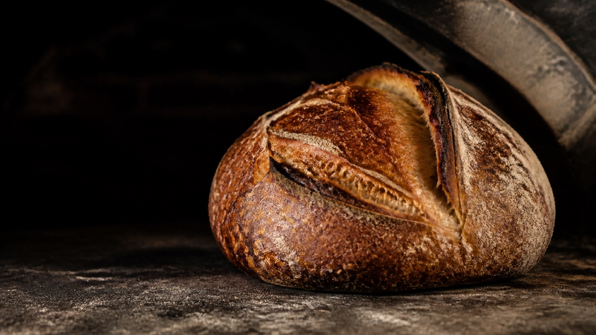
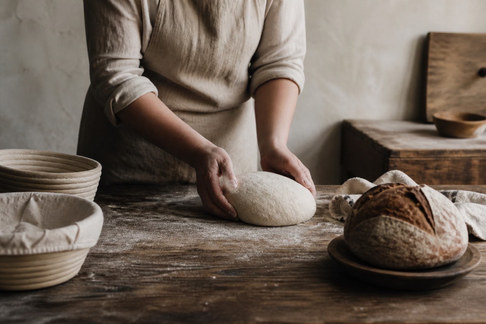
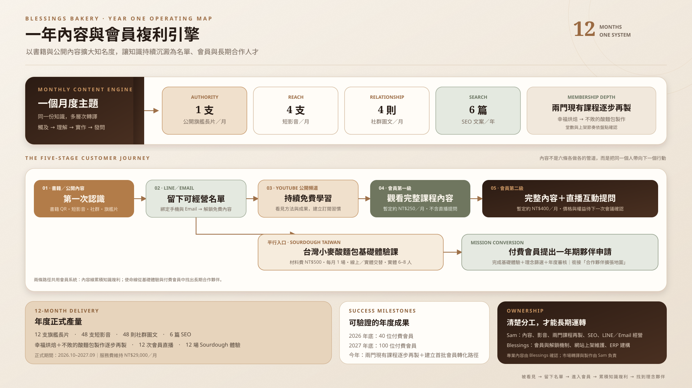
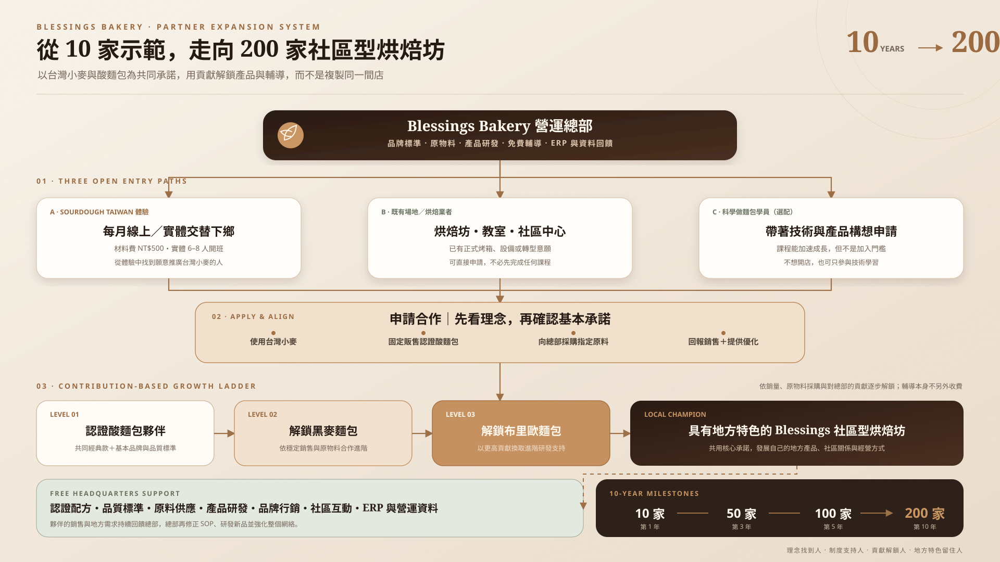

書籍與公開內容
書籍 QR Code、旗艦長片、4 支短影音、4 則社群圖文與 SEO，把新觀眾帶進 LINE／Email 與 YouTube。

把產品、顧客信任與烘焙專業，逐步建成公開內容、兩級會員與社區型烘焙坊可以共同成長的知識事業。
Blessings Bakery 已經擁有麵包產品、既有顧客與烘焙專業。這次合作不是單純增加貼文，而是把分散的信任與經驗，整理成一條能被看見、被學習、被購買的路徑。
第一條路線把既有課程重整進兩級 YouTube 會員，累積可持續訂閱收入；第二條路線以 Sourdough Taiwan 推廣台灣小麥，培養社區型烘焙坊。
書籍 QR Code、旗艦長片、4 支短影音、4 則社群圖文與 SEO，把新觀眾帶進 LINE／Email 與 YouTube。
第一級觀看課程與會員內容；第二級取得直播互動與提問權。價格暫定 250／400 元，正式上線前再確認。
Sourdough Taiwan 體驗連到付費會員、申請與年度審核，再以採購、銷售及回饋換取總部輔導與產品解鎖。

Sam Knowledge Power 負責公開內容、既有課程翻拍、會員內容整理、SEO 與名單經營；Blessings Bakery 負責專業確認、LINE 綁定與網站解鎖、自動化、ERP，以及會員與工坊實際營運。
2026 年 9 月先完成無費用準備期。正式合作從 2026 年 10 月開始，前六個月完成既有課程翻拍與會員測試，後六個月深化會員內容、夥伴制度並完成營運移交。
盤點既有課程、會員權益、舊學員名單、書籍 QR、LINE 綁定與網站解鎖流程；不計正式交付。
先完成既有幸福烘焙內容翻拍，同步啟動月度公開內容、兩級會員測試與第一場 Sourdough Taiwan 體驗。
持續整理既有課程進會員專區，驗證 250／400 元分級、觀看、提問、續訂與舊學員權益銜接。
建立付費會員申請門檻、年度合作審核、原料採購、銷售回報與產品解鎖；收益閉環於後續會議逐步定案。
交付重點由「持續開新課」改為「重整既有課程、做大會員內容庫」。會員影片總量與完整翻拍清單列為「待下一次會議確認」，不先納入固定承諾。
真正能累積的是客戶語言、內容入口、會員學習證據、課程資產與一套可持續運作的執行方法。
十二個月度主題、旗艦長片、短影音、社群與 SEO 形成可累積的公開資產。
既有課程翻拍、會員深度內容與直播問答，讓收入逐步從單次買斷轉向持續訂閱。
QR Code、LINE 電話／Email 綁定、網站影片解鎖與 YouTube 導流形成可追蹤入口。
Sourdough Taiwan 體驗、付費會員、年度申請審核、產品解鎖與十年 200 家里程碑。
以下兩張大地圖直接嵌入正式提案：第一張呈現書籍、名單、公開內容與兩級會員如何形成一年複利；第二張呈現 Sourdough Taiwan 如何從基礎體驗、付費會員與年度審核，逐步走向 200 家社區型烘焙坊。


提案說明方向，服務書定義規格，契約約定權利邊界，進度表記錄每週真實執行。
付款、權利、終止、履約與智慧財產條款。
交付規格、雙方分工、修改方式與服務邊界。
每月任務、當前狀態、完成數量與成果連結。
一年內容成長引擎，以及十年 200 家社區型烘焙坊擴張系統。
承諾完成可控制的策略、製作、發布協作與紀錄；不以觀看、排名、會員、續訂或營收作空泛保證。
配方、技術與烘焙判斷由 Blessings Bakery 確認後對外發布。
如實完成交付與紀錄，但平台與購買結果仍受市場條件影響。
費用付清後，品牌可永久商業使用正式成片與最終文稿。